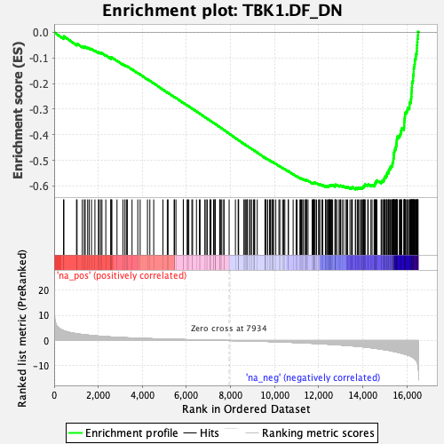
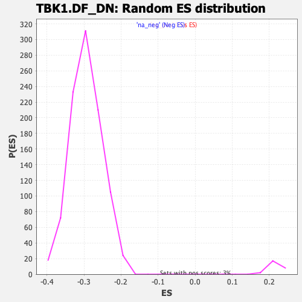

| | | Dataset | DE_genes2 |
| Phenotype | NoPhenotypeAvailable |
| Upregulated in class | na_neg |
| GeneSet | TBK1.DF_DN |
| Enrichment Score (ES) | -0.6131131 |
| Normalized Enrichment Score (NES) | -2.0823352 |
| Nominal p-value | 0.0 |
| FDR q-value | 0.0 |
| FWER p-Value | 0.0 |
Table: GSEA Results Summary

Fig 1: Enrichment plot: TBK1.DF_DN
Profile of the Running ES Score & Positions of GeneSet Members on the Rank Ordered List
| PROBE | GENE SYMBOL | GENE_TITLE | RANK IN GENE LIST | RANK METRIC SCORE | RUNNING ES | CORE ENRICHMENT | | 1 | IFIT1 | | | 424 | 3.910 | -0.0204 | No |
| 2 | ANGPTL4 | | | 442 | 3.854 | -0.0158 | No |
| 3 | NDUFA13 | | | 1014 | 2.718 | -0.0470 | No |
| 4 | GALNT11 | | | 1038 | 2.690 | -0.0445 | No |
| 5 | THBS1 | | | 1276 | 2.381 | -0.0556 | No |
| 6 | LMO4 | | | 1364 | 2.299 | -0.0576 | No |
| 7 | BPHL | | | 1409 | 2.261 | -0.0570 | No |
| 8 | SUSD6 | | | 1519 | 2.160 | -0.0605 | No |
| 9 | PMEPA1 | | | 1587 | 2.102 | -0.0616 | No |
| 10 | SLC37A4 | | | 1693 | 1.996 | -0.0651 | No |
| 11 | GNE | | | 1849 | 1.879 | -0.0719 | No |
| 12 | CLEC16A | | | 2010 | 1.748 | -0.0792 | No |
| 13 | GJA1 | | | 2027 | 1.737 | -0.0777 | No |
| 14 | IRF2 | | | 2105 | 1.678 | -0.0800 | No |
| 15 | HOXA1 | | | 2169 | 1.639 | -0.0815 | No |
| 16 | TLN1 | | | 2342 | 1.533 | -0.0898 | No |
| 17 | TBC1D10B | | | 2572 | 1.405 | -0.1018 | No |
| 18 | PRRC2B | | | 2576 | 1.400 | -0.1000 | No |
| 19 | KDM4A | | | 2585 | 1.397 | -0.0984 | No |
| 20 | TSPAN5 | | | 2618 | 1.376 | -0.0984 | No |
| 21 | CASP6 | | | 2850 | 1.265 | -0.1108 | No |
| 22 | ADCY6 | | | 3119 | 1.146 | -0.1256 | No |
| 23 | NME6 | | | 3208 | 1.109 | -0.1294 | No |
| 24 | STOM | | | 3275 | 1.082 | -0.1318 | No |
| 25 | GOLGA2 | | | 3319 | 1.068 | -0.1329 | No |
| 26 | CCND1 | | | 3532 | 0.996 | -0.1445 | No |
| 27 | PLEKHA2 | | | 3793 | 0.896 | -0.1592 | No |
| 28 | ITGB6 | | | 3899 | 0.868 | -0.1644 | No |
| 29 | OSBPL3 | | | 4232 | 0.767 | -0.1837 | No |
| 30 | ERAP1 | | | 4339 | 0.738 | -0.1891 | No |
| 31 | IL1RN | | | 4515 | 0.689 | -0.1989 | No |
| 32 | UBL4A | | | 4932 | 0.585 | -0.2236 | No |
| 33 | PPCS | | | 5131 | 0.535 | -0.2350 | No |
| 34 | COL5A2 | | | 5167 | 0.527 | -0.2364 | No |
| 35 | DDX60 | | | 5440 | 0.463 | -0.2524 | No |
| 36 | COL4A1 | | | 5458 | 0.459 | -0.2528 | No |
| 37 | COL4A5 | | | 5523 | 0.445 | -0.2561 | No |
| 38 | BDH1 | | | 5856 | 0.374 | -0.2760 | No |
| 39 | PKP4 | | | 5859 | 0.373 | -0.2756 | No |
| 40 | ANKFY1 | | | 6030 | 0.340 | -0.2855 | No |
| 41 | SLC39A8 | | | 6056 | 0.335 | -0.2866 | No |
| 42 | MFSD6 | | | 6106 | 0.324 | -0.2891 | No |
| 43 | BCL2L1 | | | 6246 | 0.294 | -0.2972 | No |
| 44 | NLK | | | 6279 | 0.291 | -0.2988 | No |
| 45 | CLN5 | | | 6454 | 0.253 | -0.3091 | No |
| 46 | FNBP1L | | | 6587 | 0.225 | -0.3169 | No |
| 47 | COL17A1 | | | 6618 | 0.220 | -0.3184 | No |
| 48 | RXRA | | | 6832 | 0.179 | -0.3312 | No |
| 49 | ITGA2 | | | 6887 | 0.173 | -0.3343 | No |
| 50 | PDGFA | | | 6944 | 0.164 | -0.3375 | No |
| 51 | MAOA | | | 7063 | 0.142 | -0.3446 | No |
| 52 | CCNG2 | | | 7082 | 0.138 | -0.3455 | No |
| 53 | COASY | | | 7113 | 0.132 | -0.3471 | No |
| 54 | GAS1 | | | 7229 | 0.111 | -0.3540 | No |
| 55 | SLC6A8 | | | 7243 | 0.108 | -0.3547 | No |
| 56 | TTPAL | | | 7293 | 0.099 | -0.3575 | No |
| 57 | PAFAH1B3 | | | 7297 | 0.098 | -0.3576 | No |
| 58 | ZKSCAN1 | | | 7306 | 0.097 | -0.3579 | No |
| 59 | ALDH9A1 | | | 7505 | 0.064 | -0.3700 | No |
| 60 | CBX6 | | | 7518 | 0.061 | -0.3707 | No |
| 61 | RALA | | | 7561 | 0.055 | -0.3732 | No |
| 62 | MYO6 | | | 7603 | 0.048 | -0.3756 | No |
| 63 | KLF13 | | | 7694 | 0.034 | -0.3811 | No |
| 64 | PTGES | | | 7702 | 0.033 | -0.3815 | No |
| 65 | RBM4 | | | 7935 | -0.001 | -0.3957 | No |
| 66 | DSC3 | | | 8220 | -0.045 | -0.4131 | No |
| 67 | EHF | | | 8348 | -0.065 | -0.4209 | No |
| 68 | BMPR2 | | | 8353 | -0.067 | -0.4210 | No |
| 69 | USP46 | | | 8366 | -0.068 | -0.4216 | No |
| 70 | KLF7 | | | 8607 | -0.110 | -0.4362 | No |
| 71 | CCND2 | | | 8621 | -0.113 | -0.4369 | No |
| 72 | HMGCS1 | | | 8693 | -0.128 | -0.4410 | No |
| 73 | C12orf43 | | | 8702 | -0.130 | -0.4414 | No |
| 74 | SMARCA2 | | | 8758 | -0.145 | -0.4445 | No |
| 75 | USP22 | | | 8760 | -0.146 | -0.4444 | No |
| 76 | GALNT3 | | | 8850 | -0.161 | -0.4496 | No |
| 77 | OSBPL1A | | | 8901 | -0.171 | -0.4524 | No |
| 78 | YTHDF2 | | | 8950 | -0.182 | -0.4551 | No |
| 79 | MTAP | | | 9038 | -0.201 | -0.4602 | No |
| 80 | HNRNPA0 | | | 9090 | -0.212 | -0.4630 | No |
| 81 | MBP | | | 9091 | -0.213 | -0.4627 | No |
| 82 | CXADR | | | 9210 | -0.243 | -0.4696 | No |
| 83 | CDR2 | | | 9560 | -0.328 | -0.4906 | No |
| 84 | ATP6AP2 | | | 9578 | -0.332 | -0.4911 | No |
| 85 | PCYOX1 | | | 9580 | -0.333 | -0.4907 | No |
| 86 | INSIG2 | | | 9614 | -0.343 | -0.4922 | No |
| 87 | KLF5 | | | 9685 | -0.365 | -0.4960 | No |
| 88 | ELL2 | | | 9768 | -0.392 | -0.5005 | No |
| 89 | AGFG1 | | | 9805 | -0.402 | -0.5021 | No |
| 90 | DNAJC16 | | | 9873 | -0.420 | -0.5056 | No |
| 91 | SLC25A13 | | | 9887 | -0.423 | -0.5058 | No |
| 92 | RAI14 | | | 9911 | -0.432 | -0.5066 | No |
| 93 | PRKRA | | | 9958 | -0.447 | -0.5088 | No |
| 94 | PCBD1 | | | 10052 | -0.474 | -0.5138 | No |
| 95 | KPNA6 | | | 10193 | -0.523 | -0.5216 | No |
| 96 | TNRC6B | | | 10236 | -0.535 | -0.5234 | No |
| 97 | SPRY2 | | | 10359 | -0.572 | -0.5301 | No |
| 98 | TTBK2 | | | 10409 | -0.589 | -0.5323 | No |
| 99 | SCARB1 | | | 10462 | -0.606 | -0.5346 | No |
| 100 | FOS | | | 10618 | -0.669 | -0.5431 | No |
| 101 | FLRT3 | | | 10622 | -0.669 | -0.5423 | No |
| 102 | GEMIN4 | | | 10838 | -0.739 | -0.5545 | No |
| 103 | TERF2 | | | 10975 | -0.790 | -0.5617 | No |
| 104 | PLEKHA1 | | | 11021 | -0.808 | -0.5633 | No |
| 105 | C5orf22 | | | 11144 | -0.859 | -0.5695 | No |
| 106 | CDCA4 | | | 11178 | -0.873 | -0.5703 | No |
| 107 | UBE2W | | | 11215 | -0.888 | -0.5712 | No |
| 108 | HIPK2 | | | 11271 | -0.912 | -0.5733 | No |
| 109 | ZNF557 | | | 11310 | -0.930 | -0.5743 | No |
| 110 | UGGT1 | | | 11390 | -0.964 | -0.5777 | No |
| 111 | IL1RL1 | | | 11425 | -0.979 | -0.5784 | No |
| 112 | PMAIP1 | | | 11436 | -0.983 | -0.5776 | No |
| 113 | AFF4 | | | 11444 | -0.986 | -0.5766 | No |
| 114 | SLC22A5 | | | 11514 | -1.009 | -0.5793 | No |
| 115 | SERPINE2 | | | 11699 | -1.085 | -0.5891 | No |
| 116 | MRPS33 | | | 11740 | -1.104 | -0.5899 | No |
| 117 | EXPH5 | | | 11763 | -1.113 | -0.5896 | No |
| 118 | SEPHS2 | | | 11768 | -1.115 | -0.5883 | No |
| 119 | BACH1 | | | 11780 | -1.121 | -0.5873 | No |
| 120 | ZNF395 | | | 11807 | -1.136 | -0.5873 | No |
| 121 | SLC26A2 | | | 11840 | -1.147 | -0.5875 | No |
| 122 | POLR3B | | | 11899 | -1.178 | -0.5894 | No |
| 123 | LRIG2 | | | 11989 | -1.215 | -0.5931 | No |
| 124 | ODF2 | | | 12041 | -1.240 | -0.5944 | No |
| 125 | SMURF2 | | | 12046 | -1.243 | -0.5929 | No |
| 126 | SIKE1 | | | 12143 | -1.298 | -0.5969 | No |
| 127 | MPDZ | | | 12184 | -1.320 | -0.5974 | No |
| 128 | IMPACT | | | 12301 | -1.374 | -0.6025 | No |
| 129 | RCC1 | | | 12313 | -1.379 | -0.6012 | No |
| 130 | HIPK3 | | | 12328 | -1.391 | -0.6001 | No |
| 131 | SOWAHC | | | 12392 | -1.422 | -0.6019 | No |
| 132 | BRWD1 | | | 12432 | -1.441 | -0.6022 | No |
| 133 | HOOK1 | | | 12458 | -1.453 | -0.6016 | No |
| 134 | CAMK2N1 | | | 12467 | -1.460 | -0.5999 | No |
| 135 | DNAJC3 | | | 12486 | -1.469 | -0.5989 | No |
| 136 | SEMA3C | | | 12503 | -1.475 | -0.5977 | No |
| 137 | RFWD3 | | | 12547 | -1.504 | -0.5982 | No |
| 138 | LETM1 | | | 12562 | -1.510 | -0.5969 | No |
| 139 | RBBP5 | | | 12590 | -1.528 | -0.5963 | No |
| 140 | SLC35A5 | | | 12629 | -1.548 | -0.5964 | No |
| 141 | ERLIN2 | | | 12735 | -1.606 | -0.6005 | No |
| 142 | COPS4 | | | 12744 | -1.609 | -0.5986 | No |
| 143 | UBXN4 | | | 12752 | -1.618 | -0.5967 | No |
| 144 | ITCH | | | 12763 | -1.626 | -0.5950 | No |
| 145 | CDK6 | | | 12820 | -1.666 | -0.5960 | No |
| 146 | TTI1 | | | 12919 | -1.726 | -0.5995 | No |
| 147 | TCOF1 | | | 12962 | -1.747 | -0.5995 | No |
| 148 | CLOCK | | | 12988 | -1.761 | -0.5985 | No |
| 149 | GOLT1B | | | 13056 | -1.803 | -0.6000 | No |
| 150 | GTPBP8 | | | 13130 | -1.842 | -0.6018 | No |
| 151 | SPIN1 | | | 13237 | -1.915 | -0.6055 | No |
| 152 | RLF | | | 13260 | -1.931 | -0.6041 | No |
| 153 | PRKD3 | | | 13308 | -1.960 | -0.6041 | No |
| 154 | NIP7 | | | 13415 | -2.033 | -0.6077 | No |
| 155 | HMBOX1 | | | 13486 | -2.093 | -0.6089 | No |
| 156 | P3H2 | | | 13507 | -2.099 | -0.6071 | No |
| 157 | TCAF1 | | | 13522 | -2.111 | -0.6049 | No |
| 158 | AKAP9 | | | 13657 | -2.204 | -0.6099 | Yes |
| 159 | DENND1B | | | 13680 | -2.223 | -0.6080 | Yes |
| 160 | GNPDA1 | | | 13757 | -2.291 | -0.6094 | Yes |
| 161 | NRIP1 | | | 13789 | -2.322 | -0.6079 | Yes |
| 162 | LIAS | | | 13851 | -2.371 | -0.6082 | Yes |
| 163 | DSN1 | | | 13907 | -2.424 | -0.6080 | Yes |
| 164 | GNAI3 | | | 13964 | -2.469 | -0.6079 | Yes |
| 165 | CHMP2B | | | 13987 | -2.487 | -0.6056 | Yes |
| 166 | NF1 | | | 14030 | -2.526 | -0.6045 | Yes |
| 167 | RCBTB1 | | | 14031 | -2.527 | -0.6008 | Yes |
| 168 | SEC63 | | | 14069 | -2.571 | -0.5994 | Yes |
| 169 | RMND1 | | | 14095 | -2.591 | -0.5971 | Yes |
| 170 | IGF2BP3 | | | 14100 | -2.596 | -0.5936 | Yes |
| 171 | RRN3 | | | 14220 | -2.712 | -0.5970 | Yes |
| 172 | CRK | | | 14246 | -2.740 | -0.5945 | Yes |
| 173 | MTA1 | | | 14365 | -2.848 | -0.5976 | Yes |
| 174 | UBXN8 | | | 14417 | -2.896 | -0.5965 | Yes |
| 175 | DCP2 | | | 14510 | -2.993 | -0.5978 | Yes |
| 176 | ZCCHC10 | | | 14537 | -3.034 | -0.5950 | Yes |
| 177 | ZNF654 | | | 14551 | -3.047 | -0.5914 | Yes |
| 178 | PNISR | | | 14564 | -3.061 | -0.5877 | Yes |
| 179 | AMMECR1 | | | 14601 | -3.110 | -0.5853 | Yes |
| 180 | GALNT7 | | | 14605 | -3.117 | -0.5810 | Yes |
| 181 | CDC27 | | | 14637 | -3.170 | -0.5783 | Yes |
| 182 | ATP6V1C1 | | | 14828 | -3.395 | -0.5850 | Yes |
| 183 | KATNBL1 | | | 14853 | -3.430 | -0.5815 | Yes |
| 184 | YES1 | | | 14904 | -3.508 | -0.5795 | Yes |
| 185 | RSRC1 | | | 14948 | -3.572 | -0.5769 | Yes |
| 186 | MSH2 | | | 14972 | -3.606 | -0.5731 | Yes |
| 187 | TMOD3 | | | 14980 | -3.614 | -0.5682 | Yes |
| 188 | TEAD1 | | | 14994 | -3.642 | -0.5637 | Yes |
| 189 | TAF15 | | | 15060 | -3.736 | -0.5623 | Yes |
| 190 | CBFB | | | 15077 | -3.762 | -0.5578 | Yes |
| 191 | DNAJB14 | | | 15088 | -3.772 | -0.5529 | Yes |
| 192 | ZWINT | | | 15107 | -3.798 | -0.5485 | Yes |
| 193 | C1D | | | 15164 | -3.868 | -0.5463 | Yes |
| 194 | UFL1 | | | 15169 | -3.880 | -0.5409 | Yes |
| 195 | NEK1 | | | 15183 | -3.897 | -0.5360 | Yes |
| 196 | BNIP2 | | | 15226 | -3.959 | -0.5328 | Yes |
| 197 | ARMC1 | | | 15235 | -3.976 | -0.5275 | Yes |
| 198 | PANK3 | | | 15271 | -4.066 | -0.5238 | Yes |
| 199 | PDHX | | | 15316 | -4.140 | -0.5204 | Yes |
| 200 | RRN3P1 | | | 15341 | -4.182 | -0.5158 | Yes |
| 201 | BPTF | | | 15345 | -4.192 | -0.5099 | Yes |
| 202 | ACAP2 | | | 15376 | -4.254 | -0.5055 | Yes |
| 203 | ZC2HC1A | | | 15381 | -4.260 | -0.4996 | Yes |
| 204 | TBK1 | | | 15385 | -4.265 | -0.4936 | Yes |
| 205 | CD2AP | | | 15398 | -4.286 | -0.4881 | Yes |
| 206 | NCOA3 | | | 15401 | -4.298 | -0.4819 | Yes |
| 207 | GOLGA4 | | | 15405 | -4.309 | -0.4758 | Yes |
| 208 | LSM14A | | | 15411 | -4.323 | -0.4698 | Yes |
| 209 | NAA35 | | | 15428 | -4.351 | -0.4645 | Yes |
| 210 | CBX5 | | | 15439 | -4.369 | -0.4587 | Yes |
| 211 | VRK1 | | | 15477 | -4.445 | -0.4545 | Yes |
| 212 | ARFGEF2 | | | 15493 | -4.462 | -0.4490 | Yes |
| 213 | DCAF16 | | | 15508 | -4.497 | -0.4433 | Yes |
| 214 | NSMAF | | | 15521 | -4.529 | -0.4374 | Yes |
| 215 | MED13L | | | 15530 | -4.555 | -0.4313 | Yes |
| 216 | DCK | | | 15536 | -4.564 | -0.4249 | Yes |
| 217 | KIF3A | | | 15541 | -4.576 | -0.4185 | Yes |
| 218 | SHTN1 | | | 15553 | -4.587 | -0.4125 | Yes |
| 219 | NEK7 | | | 15567 | -4.627 | -0.4066 | Yes |
| 220 | AP1AR | | | 15654 | -4.828 | -0.4048 | Yes |
| 221 | ZNHIT6 | | | 15684 | -4.875 | -0.3995 | Yes |
| 222 | MTPAP | | | 15712 | -4.937 | -0.3940 | Yes |
| 223 | ANKRD11 | | | 15730 | -4.962 | -0.3878 | Yes |
| 224 | IDE | | | 15743 | -4.998 | -0.3813 | Yes |
| 225 | MTR | | | 15763 | -5.037 | -0.3751 | Yes |
| 226 | ETNK1 | | | 15864 | -5.301 | -0.3735 | Yes |
| 227 | RPS6KB1 | | | 15871 | -5.313 | -0.3662 | Yes |
| 228 | DKK1 | | | 15876 | -5.321 | -0.3587 | Yes |
| 229 | BLMH | | | 15878 | -5.322 | -0.3510 | Yes |
| 230 | TRIM23 | | | 15885 | -5.356 | -0.3435 | Yes |
| 231 | SCAF11 | | | 15893 | -5.377 | -0.3361 | Yes |
| 232 | CUL5 | | | 15907 | -5.403 | -0.3291 | Yes |
| 233 | RFX7 | | | 15913 | -5.427 | -0.3215 | Yes |
| 234 | ATG2B | | | 15920 | -5.443 | -0.3139 | Yes |
| 235 | LIMS1 | | | 15983 | -5.619 | -0.3095 | Yes |
| 236 | SMC5 | | | 16016 | -5.725 | -0.3032 | Yes |
| 237 | RSF1 | | | 16033 | -5.770 | -0.2957 | Yes |
| 238 | SLK | | | 16110 | -5.981 | -0.2917 | Yes |
| 239 | CCNE2 | | | 16115 | -5.986 | -0.2832 | Yes |
| 240 | RPAP3 | | | 16122 | -6.020 | -0.2748 | Yes |
| 241 | TFAM | | | 16168 | -6.208 | -0.2686 | Yes |
| 242 | LMNB1 | | | 16178 | -6.259 | -0.2600 | Yes |
| 243 | NFYB | | | 16196 | -6.313 | -0.2519 | Yes |
| 244 | ADAM10 | | | 16203 | -6.331 | -0.2430 | Yes |
| 245 | GTF2A1 | | | 16206 | -6.350 | -0.2339 | Yes |
| 246 | PPIG | | | 16215 | -6.408 | -0.2250 | Yes |
| 247 | MPHOSPH9 | | | 16223 | -6.445 | -0.2161 | Yes |
| 248 | SPDL1 | | | 16232 | -6.486 | -0.2071 | Yes |
| 249 | MIS18BP1 | | | 16234 | -6.494 | -0.1977 | Yes |
| 250 | ALDH3A1 | | | 16261 | -6.633 | -0.1897 | Yes |
| 251 | DICER1 | | | 16276 | -6.737 | -0.1807 | Yes |
| 252 | RIF1 | | | 16279 | -6.762 | -0.1710 | Yes |
| 253 | SMG1 | | | 16298 | -6.855 | -0.1621 | Yes |
| 254 | ROCK2 | | | 16307 | -6.893 | -0.1526 | Yes |
| 255 | EXOC5 | | | 16309 | -6.899 | -0.1426 | Yes |
| 256 | KTN1 | | | 16324 | -7.006 | -0.1332 | Yes |
| 257 | APPL1 | | | 16345 | -7.186 | -0.1240 | Yes |
| 258 | KCTD3 | | | 16356 | -7.244 | -0.1141 | Yes |
| 259 | SMAD5 | | | 16361 | -7.268 | -0.1037 | Yes |
| 260 | LUC7L3 | | | 16400 | -7.746 | -0.0948 | Yes |
| 261 | CEP83 | | | 16411 | -7.870 | -0.0839 | Yes |
| 262 | NAA15 | | | 16442 | -8.159 | -0.0739 | Yes |
| 263 | ATP2B1 | | | 16452 | -8.378 | -0.0623 | Yes |
| 264 | SNTB2 | | | 16455 | -8.422 | -0.0501 | Yes |
| 265 | THOC2 | | | 16468 | -8.629 | -0.0383 | Yes |
| 266 | ESF1 | | | 16477 | -8.930 | -0.0258 | Yes |
| 267 | FOXA2 | | | 16495 | -9.827 | -0.0125 | Yes |
| 268 | KIF14 | | | 16503 | -10.060 | 0.0017 | Yes |
Table: GSEA details [plain text format]

Fig 2: TBK1.DF_DN: Random ES distribution
Gene set null distribution of ES for TBK1.DF_DN